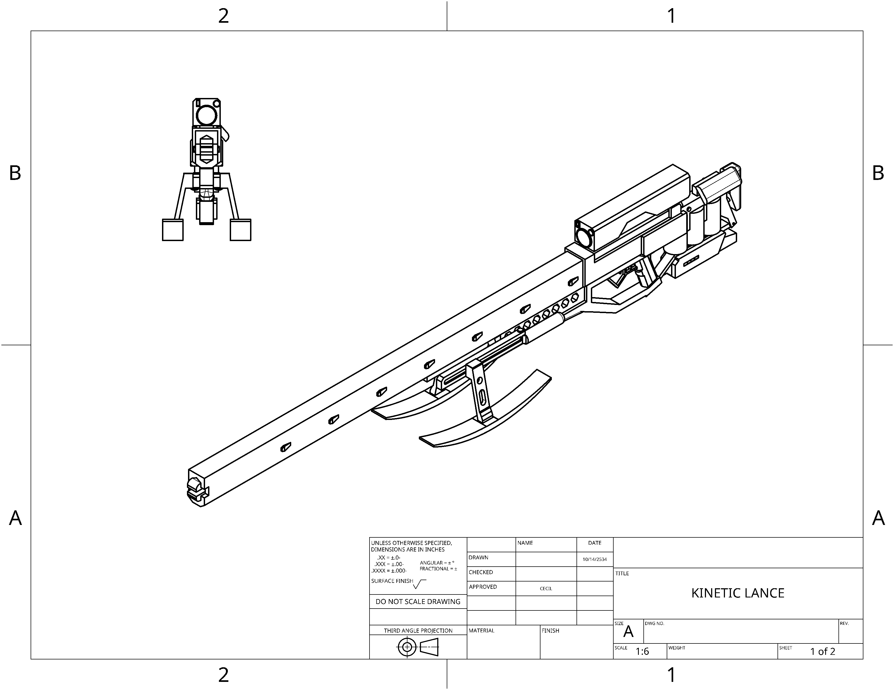
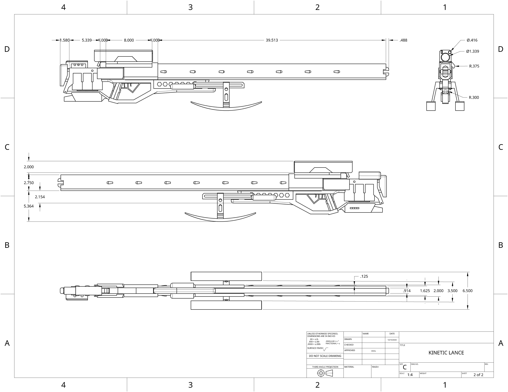

Realitivistic single shot anti armor weapon, arguably a slightly less elegant solution, brought back from a more nuanced age.
 | | | | | | |
|---|---|---|
| Damage: | 100 | (Headshot capable) |
| Velocity: | NaN | |
| Armor penetration: | 1200mm | |
| Rate of fire: | (single shot -30rpm) | |
| Magazine size: | 1 |